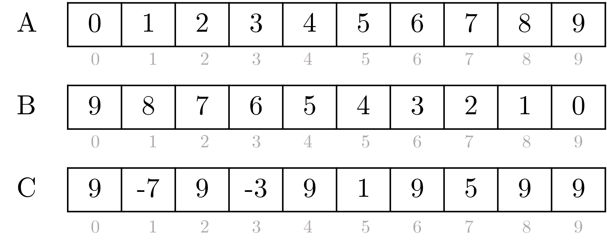

Profesor: Joel Fuentes
Ayudantes: Daniel López, Sebastián González
Descripción
En este laboratorio Ud. deberá implementar un programa en DPC++ que contenga uno o más
kernels que realicen operaciones sobre vectores. El objetivo es que las operaciones en vectores se
ejecuten en paralelo en un acelerador (CPU multi-core, GPU o FPGA).
Considere que existen 3 vectores A, B y C. Las operaciones a realizar en paralelo sobre estos
vectores son:
- Asignar valores consecutivos incrementales al vector A.
- Asignar valores consecutivos decrementales al vector B.
- Realizar operaciones aritméticas entre A y B guardando el resultado en C. Si el índice de los
vectores es par se debe realizar suma, si el índice es impar se debe realizar resta.
La Figura 1 muestra un ejemplo de los vectores A, B y C luego de realizar las operaciones
descritas anteriormentes. Por ejemplo, la operación en el índice 0 corresponde a la suma C[0] =
A[0] + B[0] resultando 9. La operación en el índice 1 corresponde a la resta C[1] = A[1] B[1]
resultando -7.
Para la implementación del kernel se recomienda el uso de buffers, accessors y parallel_for. En
el siguiente link encontrará una Wiki con detalles sobre su uso en DPC++: http://www.face.ubiobio.cl/~jfuentes/classes/ch/unit2/dpcpp

Figura 1: Ejemplo vector A, B y C.
Para probar su implementación, se recomienda ejecutarlo en servidores Devcloud. En el siguiente
link encontrará una Wiki con detalles sobre la configuración del entorno de desarrollo Devcloud y
compilación con DPC++: http://www.face.ubiobio.cl/~jfuentes/classes/ch/unit2/devcloud
Solución:
/*********************************
* Lab 1 - Computación Heterogénea
* Primavera 2021
**********************************/
#include <CL/sycl.hpp>
constexpr int N = 20;
using namespace sycl;
int main(){
//Cola para la ejecución del dispositivo
queue q;
std::cout << "Device : "
<< q.get_device().get_info<info::device::name>()
<< std::endl;
//Declaracion de buffer
std::vector<int> A(N);
std::vector<int> B(N);
std::vector<int> C(N);
buffer buffA(A);
buffer buffB(B);
buffer buffC(C);
// Envío del kernel al dispositivo de hardware
q.submit([&](handler& h){
// Agrega tu código aquí
accessor a(buffA, h, read_write);
accessor b(buffB, h, read_write);
accessor c(buffC, h, write_only);
h.parallel_for(N,[=](auto i) {
a[i] = i;
b[i] = N - i;
if (i%2 == 0)
c[i] = a[i] + b[i];
else
c[i] = a[i] - b[i];
});
}).wait();
std::cout << "A: ";
for (int i=0; i<N; i++)
std::cout << A[i] << " ";
std::cout << std::endl;
std::cout << "B: ";
for (int i=0; i<N; i++)
std::cout << B[i] << " ";
std::cout << std::endl;
std::cout << "C: ";
for (int i=0; i<N; i++)
std::cout << C[i] << " ";
std::cout << std::endl;
return 0;
}